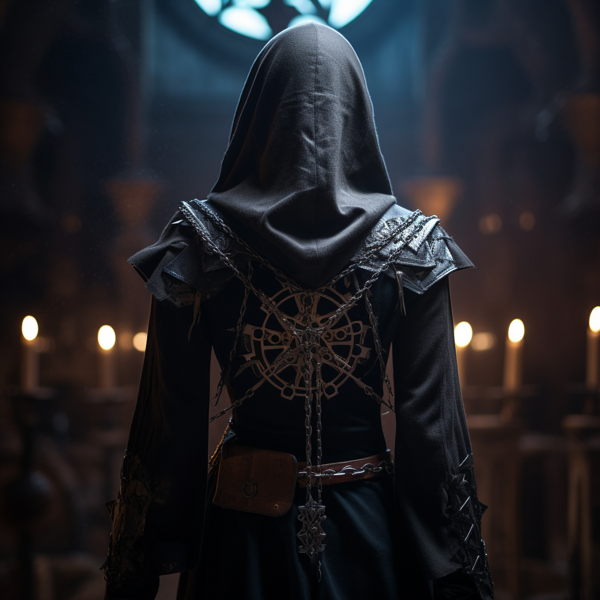

The Legion of Saints
In a world shrouded in night, where the clash between divine light and demonic darkness rages on, the cleric-soldiers known as the Legion of Saints stand as the last bastion of hope. Led by the enigmatic Master Theologians, they wield the powers of their divine Mother God, Heia, in a desperate struggle against the malevolent Curators and demons summoned from the Inferno.

Octavia, Artemis, Ezra, Edith, and Jude fight as a unified team, each blessed with unique powers by Mother Heia to be used in conjunction with each other. Each is burdened by secrets, scars of the past, and fears for the future, that they must overcome as the Curator’s set a plan into motion to plunge their world into war once again.
As the war reaches its climax, the Legion of Saints must confront the Curators on the battlefield and within the depths of their own souls. Sacrifices will be made, bonds will be tested, and the fate of their world will hang in the balance. But with the light of Heia guiding their way, they may yet emerge victorious, though the cost may be more than they can bear.